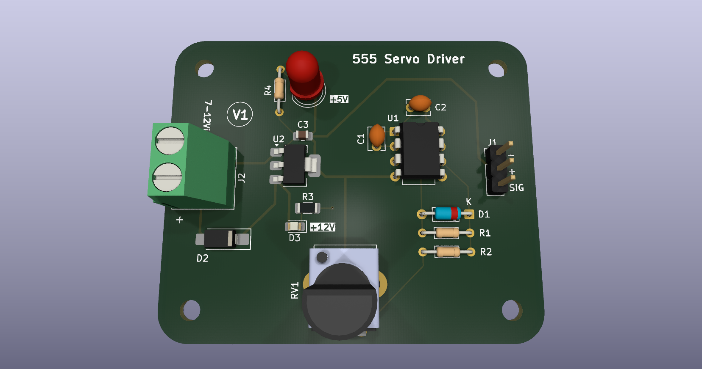
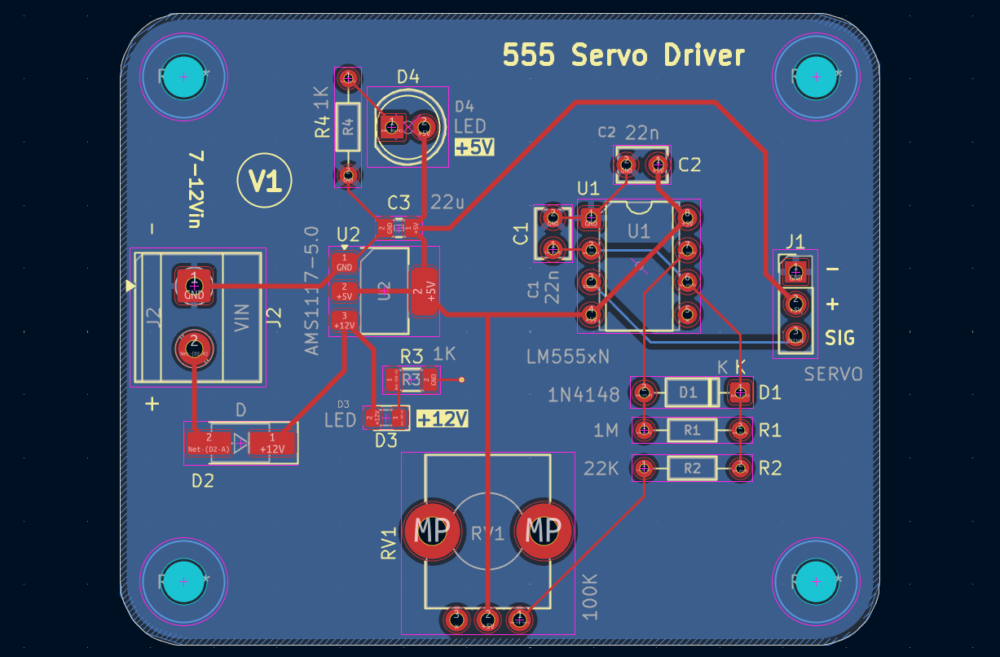
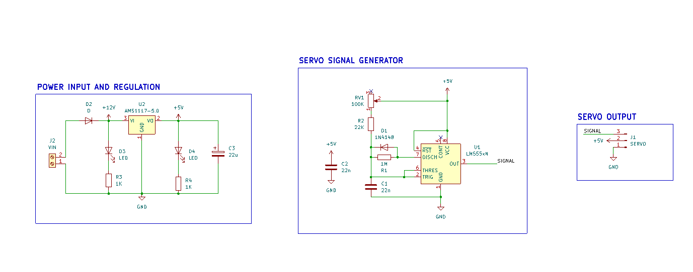

555 Servo
Controller
A compact 555 timer based servo controller designed in KiCad. This project documents the complete PCB design workflow, from schematic and footprint selection through layout, verification, 3D visualization, and fabrication outputs.
{kind=link}

Built to learn the full PCB workflow.
The project was completed while working through the PCB Design Zero-to-Hero training modules by NU Teams. The training provided the learning framework; this repository contains the resulting KiCad project and documentation.
The underlying circuit uses a 555 timer to generate the servo control signal. A potentiometer is used to adjust the generated pulse, allowing the servo position to be varied. The circuit is intentionally kept simple because the primary focus here is the PCB design and documentation workflow.
The board design includes component placement, routing, board outline, mounting considerations, silkscreen labeling, 3D visualization, and generated fabrication and assembly files.
From schematic to board.
The PCB was designed with emphasis on placement, routing, accessibility, mechanical clearances, board outline, and clear silkscreen labeling.


Component Placement
Components arranged with attention to access, routing, and board organization.
Routing
PCB traces organized around the circuit and physical constraints of the board.
3D Visualization
KiCad 3D views used to inspect the assembled-board representation.
{kind=link}
Clean CAD checks.
ERC and DRC were run in KiCad. These checks provide design-level verification; they do not replace physical testing of a manufactured PCB.
Everything needed to inspect the design.
The repository keeps the editable KiCad source files together with documentation and generated fabrication outputs.
- assets/
- documentation/
- ├── schematic.pdf
- ├── pcb-layout.pdf
- verification/
- fabrication/
- gerbers/
- drills/
- ├── BOM.csv
- └── position.csv
- external-cad/
- Servo Controller 555.kicad_pro
- Servo Controller 555.kicad_sch
- Servo Controller 555.kicad_pcb
- LICENSE
- README.md
{kind=link}
{kind=link}
External CAD, kept separate.
A STEP model is included for component visualization in KiCad's 3D Viewer.
It is kept in a separate external-cad/ directory rather than
being mixed with the KiCad source files.
Model: Potentiometer_Bourns_PTV09A-1_Single_Vertical.step
The PCB references the model using a project-relative path, so the reference should remain valid when the repository is cloned to another system.
Clone. Open. Inspect.
The complete KiCad project is kept together so it can be opened and edited after cloning.
Requirements
KiCad 10.0 or a compatible version capable of opening the project files.
Clone the repository
git clone https://github.com/shlok-ac/Servo-Controller-555.git cd Servo-Controller-555Open GitHub Repository ↗
Open in KiCad
- Clone or download the repository.
- Open
Servo Controller 555.kicad_pro. - Use the KiCad Project Manager to open the Schematic Editor or PCB Editor.
The main project files are the .kicad_pro, .kicad_sch,
and .kicad_pcb files at the repository root.
Where the workflow came from.
This project was completed while working through the PCB Design Zero-to-Hero training modules by NU Teams.
Technical Module
The training material provided the learning framework for the project. This repository contains the resulting KiCad project files, PCB layout, documentation, verification results, and generated fabrication outputs.
Open hardware, strongly reciprocal.
Released under the CERN Open Hardware Licence Version 2 – Strongly Reciprocal.
CERN-OHL-S-2.0
The license allows others to use and study the hardware design, modify and adapt it, manufacture hardware based on it, and distribute the original or modified design. Under the Strongly Reciprocal terms, modifications and derivative designs must be made available under the same license along with the corresponding source design files.
Read the full LICENSE ↗